I decided to use the Pokemon dataset in R for this project since as a gamer, it seemed like a lot of fun to be able to bring my hobbies into class. My categorical variables are Generation since there are 6 generations of Pokemon, and Legendary status, or whether a given Pokemon is legendary or not. Technically, Generation registers as an integer column in the dataset, but as Generation is a title not a value, it still classifies as a categorical variable. I’d originally wanted to use their type, but since there are 18 Pokemon types that would be outside the scope of this project. My numeric variables are HP, Attack, Defense, Special Attack, Special Defense, and Speed stats. The dataset has 800 observations.
library(tidyverse)
pokemon<-read.csv("http://www.nathanielwoodward.com/Pokemon.csv")
poke<-pokemon%>%select(Name, HP, Attack, Defense, "SpAtk"="Sp..Atk","SpDef"="Sp..Def",Speed, Generation, Legendary)I performed a MANOVA test to check if any of numeric variables showed a mean difference across Pokemon generations. The first step was to check the assumptions. The data isn’t randomly sampled, but I’ve looked past that, since it’s a collection of facts for every single Pokemon in existence. Assumably, the values are taken as a mean since every individual Pokemon, even within species, has it’s own unique set of statistics. The data is a collection of independent observations. Then I checked for multivariate normality of DVs. The first multivariate plot I made was with Attack and Defense stats by Generation. The plot showed multivariate normality between the variables.
library(mvtnorm)
library(ggExtra)
ggplot(poke, aes(x= Attack, y = Defense))+geom_point(alpha=0.5)+geom_density_2d(h=2)+coord_fixed()+facet_wrap(~Generation)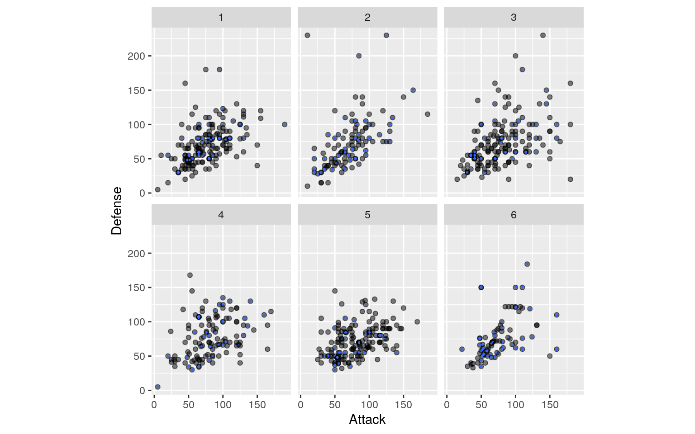
The next multivariate plot I mad was with Special Attack and Special Defense stats by Generation.The plot showed multivariate normality between the variables.
ggplot(poke, aes(x= SpAtk, y = SpDef))+geom_point(alpha=0.5)+geom_density_2d(h=2)+coord_fixed()+facet_wrap(~Generation)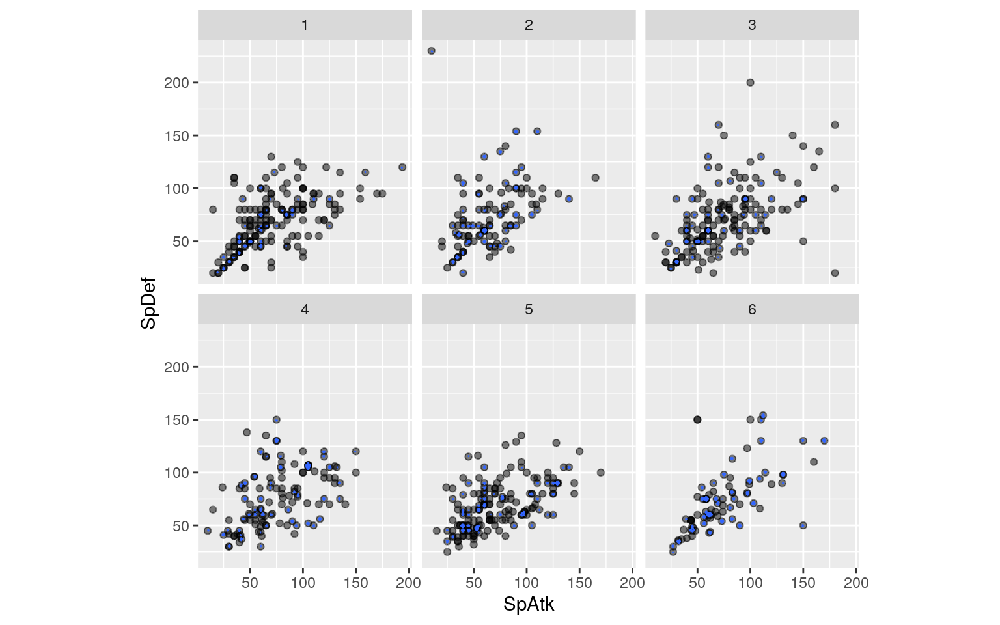 The last multivariate plot I mad was with HP and Speed stats by Generation. The plot showed multivariate normality between the variables.
ggplot(poke, aes(x= HP, y = Speed))+geom_point(alpha=0.5)+geom_density_2d(h=2)+coord_fixed()+facet_wrap(~Generation)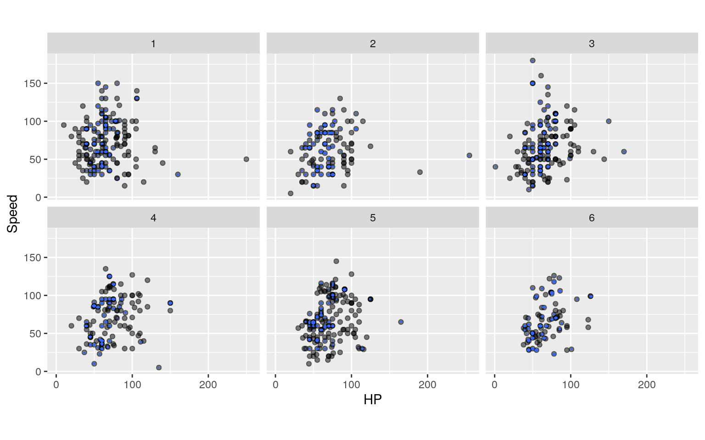 To formally test for multivariate normality, I performed the following procedure to obtain actual statistic values to prove the multivariate normality assumption. The null hypothesis for this test is that the normality assumption is met.
library(rstatix)
group_gen <- poke$Generation
DVs <- poke%>%select(HP, Attack, Defense, SpAtk, SpDef, Speed)
sapply(split(DVs,group_gen),mshapiro_test)## 1 2 3 4 5 6
## statistic 0.7071117 0.6867318 0.8893306 0.9245171
0.8817748 0.8140892
## p.value 8.572003e-17 1.00945e-13 1.434752e-09
4.095452e-06 3.65562e-10 8.926921e-09Since the p-values are all less than 0.05, that means that the results are statistically significant and therefore the null hypothesis is rejected. Since it’s hard to meet all the assumptions of MANOVA and each group had over 25 values in it, I continued on.
The next assumption to test for was homogeneity of within-group covariance matrices. For MANOVA tests, this mist be assumed for each DV and there must be covariance between any two DV. First, I created separate covariance matrices for each group.
lapply(split(DVs,group_gen), cov)## $`1`
## HP Attack Defense SpAtk SpDef Speed
## HP 792.64593 305.4373 141.56269 255.9187 366.4710
16.96685
## Attack 305.43731 945.2383 419.74356 223.3646 354.6268
296.18824
## Defense 141.56269 419.7436 820.32614 258.4172 165.3399
-19.97309
## SpAtk 255.91866 223.3646 258.41723 1186.0520 489.2528
465.06382
## SpDef 366.47097 354.6268 165.33987 489.2528 650.5191
337.76506
## Speed 16.96685 296.1882 -19.97309 465.0638 337.7651
880.65648
##
## $`2`
## HP Attack Defense SpAtk SpDef Speed
## HP 935.7089 223.5560 160.01420 251.7357 326.4960
130.40144
## Attack 223.5560 1069.8563 652.51276 304.0016 231.2979
290.12920
## Defense 160.0142 652.5128 1539.28706 107.7173 711.5987
-24.85966
## SpAtk 251.7357 304.0016 107.71734 773.6730 319.4232
301.13208
## SpDef 326.4960 231.2979 711.59874 319.4232 994.4101
200.43917
## Speed 130.4014 290.1292 -24.85966 301.1321 200.4392
743.27835
##
## $`3`
## HP Attack Defense SpAtk SpDef Speed
## HP 578.8660 409.4316 233.64969 377.4771 247.2794
183.05991
## Attack 409.4316 1339.1038 565.38365 850.8451 272.8522
521.51258
## Defense 233.6497 565.3836 1240.63145 306.2459 623.4616
38.44151
## SpAtk 377.4771 850.8451 306.24591 1253.6918 578.8049
650.01053
## SpDef 247.2794 272.8522 623.46164 578.8049 963.4585
253.60189
## Speed 183.0599 521.5126 38.44151 650.0105 253.6019
981.69245
##
## $`4`
## HP Attack Defense SpAtk SpDef Speed
## HP 630.6931 457.4777 187.82231 306.3913 139.3842
156.98843
## Attack 457.4777 1074.5657 352.45096 408.7957 146.6003
399.14518
## Defense 187.8223 352.4510 908.76570 377.6293 588.7163
88.94649
## SpAtk 306.3913 408.7957 377.62934 1018.0596 415.1890
396.86164
## SpDef 139.3842 146.6003 588.71632 415.1890 756.1886
124.93506
## Speed 156.9884 399.1452 88.94649 396.8616 124.9351
810.82590
##
## $`5`
## HP Attack Defense SpAtk SpDef Speed
## HP 502.1072 355.8618 214.027162 308.2718 258.1273
165.321693
## Attack 355.8618 922.0748 285.136585 199.8362 156.9809
356.000813
## Defense 214.0272 285.1366 543.770288 177.9003 314.8053
2.504545
## SpAtk 308.2718 199.8362 177.900333 1016.9145 388.4115
378.866814
## SpDef 258.1273 156.9809 314.805322 388.4115 501.2548
127.020658
## Speed 165.3217 356.0008 2.504545 378.8668 127.0207
825.219364
##
## $`6`
## HP Attack Defense SpAtk SpDef Speed
## HP 437.1370 313.3246 183.752785 331.85878 230.8817
178.967179
## Attack 313.3246 851.4429 443.579344 529.20596 266.3240
178.321289
## Defense 183.7528 443.5793 984.095754 21.76061 311.5697
4.918699
## SpAtk 331.8588 529.2060 21.760614 1010.65402 576.0325
412.906956
## SpDef 230.8817 266.3240 311.569708 576.03252 905.1853
199.320385
## Speed 178.9672 178.3213 4.918699 412.90696 199.3204
660.076483After that, however, I decided to go with a more formal test of homogeneity of covariance using Box’s M test. The null hypothesis was that the homogeneity of covariance assumption was met.
box_m(DVs,group_gen)## # A tibble: 1 x 4
## statistic p.value parameter method
## <dbl> <dbl> <dbl> <chr>
## 1 419. 4.36e-39 105 Box's M-test for Homogeneity of
Covariance MatricesThe p-value was much lower than 0.05, so the null hypothesis was rejected, but since it’s hard to meet all the assumptions of MANOVA, I continued on.
Since the statistics in question (HP, Attack, Defense, SpAtk, SpDef, Speed) are all independent assumptions, I assumed no linear relationships among the DVs. There were also no extreme univariate or multivariate outliers and no multicollinearity, so I continued on to the actual MANOVA test. My null hypothesis was that for each response variable, the means of all the generations were equal. My alternative hypothesis was that for at least one of my response variable, at least one of generation mean differs.
manova_gen<- manova(cbind(HP, Attack, Defense, SpAtk, SpDef, Speed)~Generation, data=poke)
summary(manova_gen)## Df Pillai approx F num Df den Df Pr(>F)
## Generation 1 0.0073871 0.9836 6 793 0.4351
## Residuals 798The p-value of the MANOVA test is 0.435 which is larger than the significance value of 0.05, and therefore not statistically significant, so I accepted the null hypothesis. That means that for each of the response variables (HP, Attack, Defense, Special Attack, Special Defense, and Speed) the means of all the generations were equal. Therefore there was no need to run individual univariate ANOVA tests or post-hoc analyses. This was expected since each generation of Pokemon was introduced per new game so their stats overall would be expected to be on a similar level to those in a previous generation so as to avoid having overpowered characters and power creep.
For my randomization test, I decided to run an F-statistic/ANOVA test to analyze the relationship between what Generation a given Pokemon is in and their Attack stat.
When checking assumptions, as stated before, the data isn’t randomly sampled, but I’ve looked past that, since it’s a collection of facts for every single Pokemon in existence and the data is a collection of independent observations. There are large samples, with more than 25 entries in each of the two groups, as there are 166 Pokemon in Gen 1, 106 in Gen 2, 160 in Gen 3, 121 in Gen 4, 165 in Gen 5, and 82 in Gen 6. When looking at the Equal Variance assumption, the standard deviation of Attack stats for Gen 1 Pokemon is 30.745, 32.708 for Gen 2, 36.594 for Gen 3, 32.781 for Gen 4, 30.366 for Gen 5, and 29.180 for Gen 6 which are all close to each other so the data passes that assumption.
table(poke$Generation)##
## 1 2 3 4 5 6
## 166 106 160 121 165 82Gen1 <- poke[poke$Generation=="1",]
Gen2 <- poke[poke$Generation=="2",]
Gen3 <- poke[poke$Generation=="3",]
Gen4 <- poke[poke$Generation=="4",]
Gen5 <- poke[poke$Generation=="5",]
Gen6 <- poke[poke$Generation=="6",]
sd(Gen1$Attack)## [1] 30.74473sd(Gen2$Attack)## [1] 32.70866sd(Gen3$Attack)## [1] 36.59377sd(Gen4$Attack)## [1] 32.78057sd(Gen5$Attack)## [1] 30.36568sd(Gen6$Attack)## [1] 29.1795Then, I ran the F-statistic/ANOVA test. The null hypothesis us that the mean Attack stat for a Pokemon is equal regardless of Generation. The alternative hypothesis is that the mean Attack stat differs depending on what Generation a Pokemon is in.
summary(aov(Attack~Generation,data=poke))## Df Sum Sq Mean Sq F value Pr(>F)
## Generation 1 2228 2228 2.118 0.146
## Residuals 798 839503 1052The results of the F-statistic/ANOVA test yielded a p-value of 0.146 which is greater than 0.05, so I failed to reject the null hypothesis meaning that there is no significant difference between the Attack statistic from Generation to Generation. Post-hoc tests weren’t necessary since the null hypothesis was accepted.
Then I used a randomization test instead of the One-Way ANOVA.
obs_F <- 2.118
Fs <- replicate(5000,{
new <- poke%>%mutate(Attack=sample(Attack))
SSW <- new%>%group_by(Generation)%>%summarize(SSW=sum((Attack-mean(Attack))^2))%>%summarize(sum(SSW))%>%pull
SSB <- new%>%mutate(mean=mean(Attack))%>%group_by(Generation)%>%mutate(groupmean=mean(Attack))%>%summarize(SSB=sum((mean-groupmean)^2))%>%summarize(sum(SSB))%>%pull
(SSB/1)/(SSW/798)
})
hist(Fs, prob=T); abline(v=obs_F, col="red",add=T)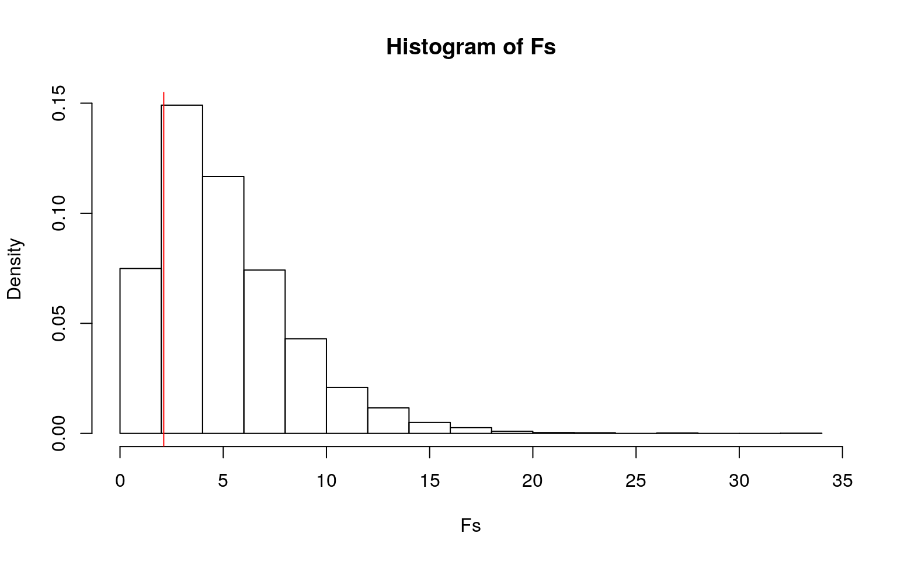
mean(Fs>obs_F)## [1] 0.8338The p-value obtained was 0.83 which is again greater than 0.05, leading to failing to reject the null hypothesis, meaning that there is no significant difference between the Attack statistic from Generation to Generation.
Next, I ran a linear regression test to observe the relationship of HP, Attack, Defense stats. I tested whether you can predict HP stats from Attack and Defense stats. The first null hypothesis was that while controlling for Attack stats, Defense stats do not explain variation in HP stats. The second null hypothesis was that while controlling for Defense stats, Attack stats do not explain variation in HP stats. Before running the test, I mean-centered all three numeric variables.
poke$HP_c <- poke$HP - mean(poke$HP)
poke$Attack_c <- poke$Attack - mean(poke$Attack)
poke$Defense_c <- poke$Defense - mean(poke$Defense)
fit <- lm(HP_c~Attack_c*Defense_c, data = poke)
summary(fit)##
## Call:
## lm(formula = HP_c ~ Attack_c * Defense_c, data = poke)
##
## Residuals:
## Min 1Q Median 3Q Max
## -68.920 -14.365 -2.809 8.483 204.360
##
## Coefficients:
## Estimate Std. Error t value Pr(>|t|)
## (Intercept) -0.6574535 0.8731679 -0.753 0.4517
## Attack_c 0.3047959 0.0280583 10.863 <2e-16 ***
## Defense_c 0.0542124 0.0291309 1.861 0.0631 .
## Attack_c:Defense_c 0.0014826 0.0007023 2.111 0.0351 *
## ---
## Signif. codes: 0 '***' 0.001 '**' 0.01 '*' 0.05 '.' 0.1
' ' 1
##
## Residual standard error: 23.07 on 796 degrees of freedom
## Multiple R-squared: 0.1866, Adjusted R-squared: 0.1836
## F-statistic: 60.88 on 3 and 796 DF, p-value: < 2.2e-16The regression equation states that Mean Centered HP = -0.657 + 0.305(Centered Attack) + 0.054(Centered Defense). 0.305 is the slope for centered HP on centered Attack while holding centered Defense constant. 0.054 is the slope for centered HP on centered Defense while holding centered Attack constant. Then, I plotted the regression.
ggplot(poke, aes(x=Attack_c*Defense_c, y=HP_c))+geom_point()+ geom_smooth(method="lm",se=F,fullrange=T,) + ggtitle("Linear Regression of Predicting HP stats from Attack and Defense stats of Pokemon")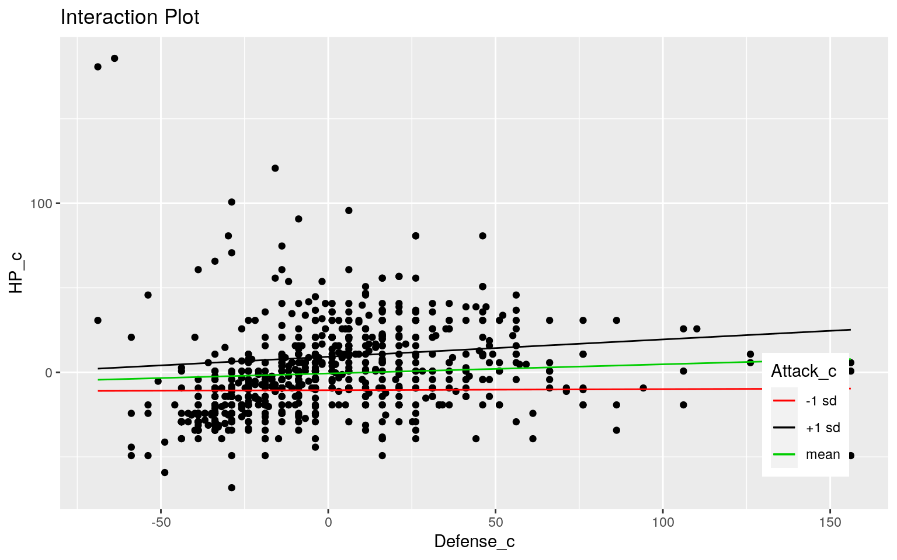
The proportion of variation in HP stats explained by Attack and Defense stats is the same as the R-squared value, which is 0.1836.
Next I looked at the assumptions for the linear regression I just performed. I started with linearity, testing for this by plotting the relationship between the centered data for Attack and HP and then Defense and HP. Both distributions showed linearity. As mentioned in prior parts, the observations are independent and while the sampling isn’t random, it’s bypassable for this project.
ggplot(poke, aes(x=Attack_c, y=HP_c)) + geom_point()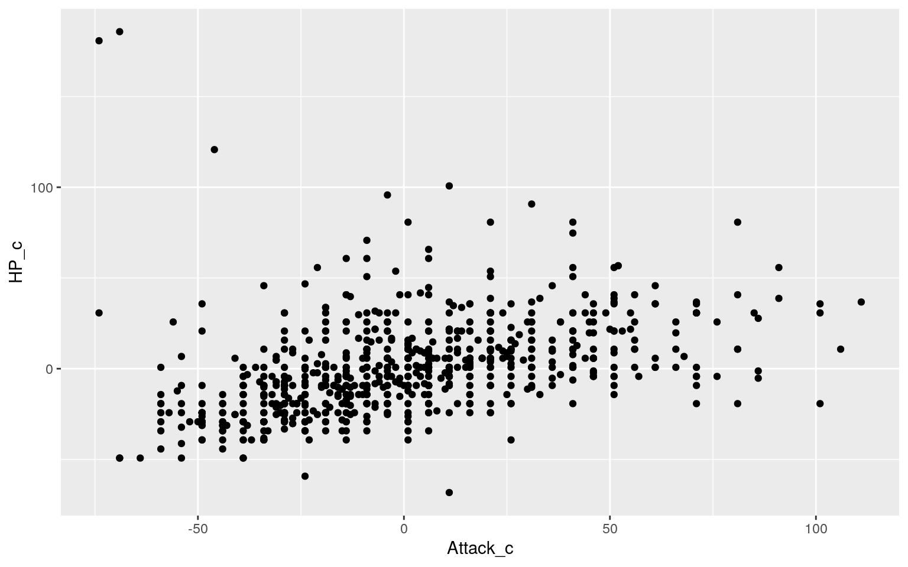
ggplot(poke, aes(x=Defense_c, y=HP_c)) + geom_point()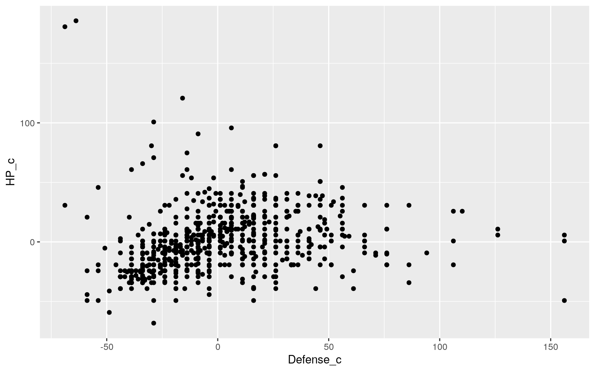
Then I checked for normally distributed residuals. Looking at the histogram of the residuals, the distribution looks normal. After this I tested for equal variance, or homoskedasticity. Observing the plot of the residuals vs. the fitted values, the variance could be more constant as there is a large area of dense grouping.
resids<- lm(HP_c~Attack_c*Defense_c, data = poke)$residuals
ggplot()+geom_histogram(aes(resids),bins = 10)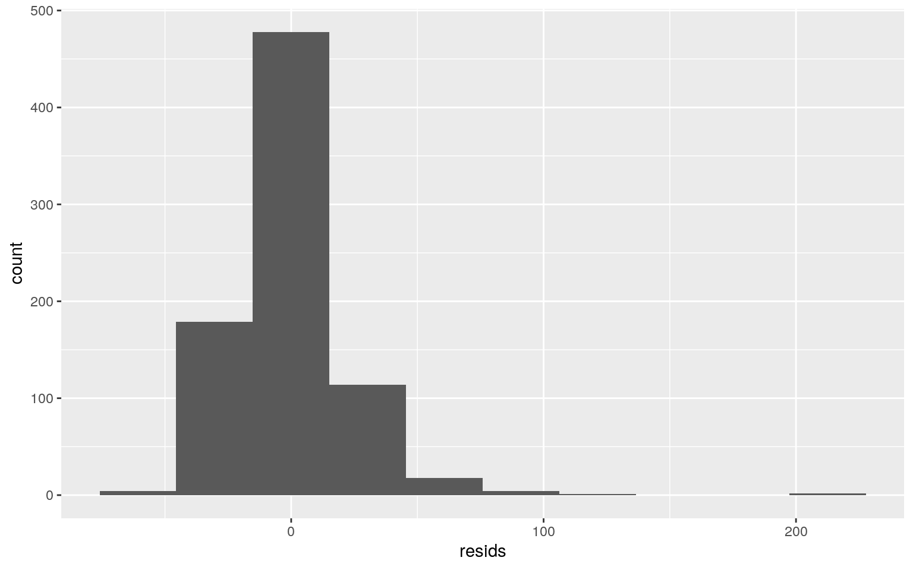
fitted <- lm(HP_c~Attack_c*Defense_c, data = poke)$fitted.values
ggplot()+geom_point(aes(fitted,resids))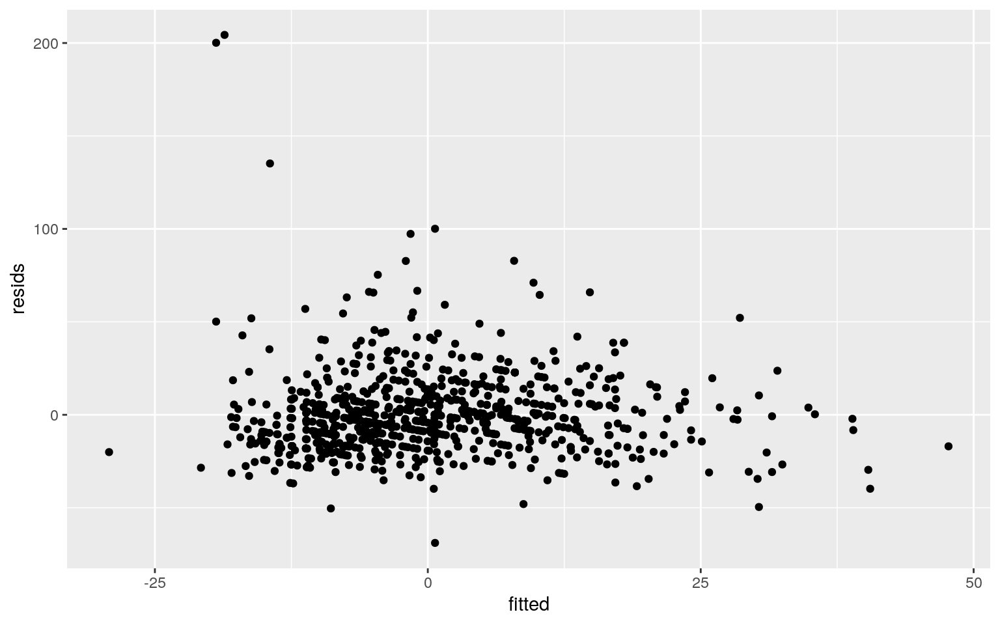
Then I recomputed regression results with robust standard errors due to not meeting the homoskedasticity assumption.
library(sandwich)
library(lmtest)
fit_rse <- coeftest(fit,vcov=vcovHC(fit))[,1:2]
fit_rse## Estimate Std. Error
## (Intercept) -0.65745350 0.830929336
## Attack_c 0.30479587 0.034934622
## Defense_c 0.05421238 0.034125930
## Attack_c:Defense_c 0.00148257 0.001468556There are no real changes to the results of the linear regression, except for changes in the Standard Errors. The standard error of the intercept changed from 0.873 to 0.831. The standard error of the slope of the centered Attack stat changed from 0.028 to 0.035. The standard error of the slope of the centered Defense stat changed from 0.029 to 0.034. This makes sure that all the assumptions are met for the linear regression.
Then I reran the same linear regression but with bootstrapped standard errors.
samp_distn<-replicate(5000, {
boot_dat <-sample_frac(poke, replace = T)
fit_boot <- lm(HP_c~Attack_c*Defense_c, data = boot_dat)
coef(fit_boot)
})
samp_distn%>%t%>%as.data.frame%>%summarize_all(sd)## (Intercept) Attack_c Defense_c Attack_c:Defense_c
## 1 0.8485434 0.03403668 0.03371174 0.001472464resids_boot <-fit$residuals
fitted_boot <-fit$fitted.values
resid_resamp <- replicate(5000,{
new_resids <- sample(resids_boot,replace = TRUE)
poke$new_y<-fitted_boot+new_resids
fit_boot <-lm(new_y~Attack_c*Defense_c,data = poke)
coef(fit_boot)
})
resid_resamp%>%t%>%as.data.frame%>%summarize_all(sd)## (Intercept) Attack_c Defense_c Attack_c:Defense_c
## 1 0.8812685 0.02830226 0.02922155 0.0007028976The bootstrapped SEs are 0.8735 for the intercept, 0.0282 for the centered attack stat, 0.0287 for the centered defense stat. The bootstrapped SE for the intercept increased from the robust standard error and is slightly larger than the original unaltered standard error/ The bootstrapped SE for the centered attack stat decreased from the robust standard error, but increased slightly from the unaltered standard error. The bootstrapped SE for the centered defense stat decreased compared to both the robust and unaltered standard errors.
Next I fitted a logistic regression model predicting the binary variable of whether a Pokemon is Legendary or not from Special Attack and Special Defense. I chose not to include interaction in the model.
fit_log <-glm(Legendary~SpAtk+SpDef, family = "binomial",data = poke)
fit_log_coef <- coeftest(fit_log)
coef(fit_log)%>%round(5)%>%data.frame## .
## (Intercept) -9.95271
## SpAtk 0.04502
## SpDef 0.03651The equation generated from this is log(odds)= -9.953 + 0.045(Special Attack) + 0.037(Special Defense). Then this can be changed into odds=0.00005x1.046^(Special Attack)x1.038^(Special Defense). Holding Special Defense constant, going up one Special Attack stat multiplies odds by a factor of 1.046. Holding Special Attack constant, going up one Special Defense stat multiplies odds by a factor of 1.038. Then, I reported a confusion matrix for my logistic regression.
probs_log<-predict(fit_log,type = "response")
class_diag <- function(probs,truth){
if(is.character(truth)==TRUE) truth<-as.factor(truth)
if(is.numeric(truth)==FALSE & is.logical(truth)==FALSE) truth<-as.numeric(truth)-1
tab<-table(factor(probs>.5,levels=c("FALSE","TRUE")),factor(truth, levels=c(0,1)))
acc=sum(diag(tab))/sum(tab)
sens=tab[2,2]/colSums(tab)[2]
spec=tab[1,1]/colSums(tab)[1]
ppv=tab[2,2]/rowSums(tab)[2]
ord<-order(probs, decreasing=TRUE)
probs <- probs[ord]; truth <- truth[ord]
TPR=cumsum(truth)/max(1,sum(truth))
FPR=cumsum(!truth)/max(1,sum(!truth))
dup <-c(probs[-1]>=probs[-length(probs)], FALSE)
TPR <-c(0,TPR[!dup],1); FPR<-c(0,FPR[!dup],1)
n <- length(TPR)
auc <- sum( ((TPR[-1]+TPR[-n])/2) * (FPR[-1]-FPR[-n]))
data.frame(acc,sens,spec,ppv,auc)
}
class_diag(probs_log,poke$Legendary)## acc sens spec ppv auc
## 1 0.93 0.3076923 0.985034 0.6451613 0.9307378The accuracy of the model is 0.93 which is good. The sensitivity, which is the true positive rate, or the probability of a Pokemon being Legendary if they really are when predicted from Special Attack and Special Defense is 20/65=0.308. The specificity, which is the true negative rate, or the probability of a Pokemon being labeled as Legendary when they aren’t when predicted from Special Attack and Special Defense is 724/735=0.985. The Precision, which is the PPV, or the proportion of Pokemon classified as Legendary that actually are from Special Attack and Special Defense is 20/31=0.645. The AUC is 0.931 which means that the probability of a randomly selected Legendary Pokemon has a higher Special Attack and Special Defense than a randomly selected non-Legendary Pokemon. Next, I made a density plot of the log-odds colored by the Legendary status of a Pokemon.
poke$logit<-predict(fit_log,type = "link")
poke%>%ggplot()+geom_density(aes(logit,color=Legendary,fill=Legendary),alpha=0.4)+theme(legend.position=c(0.85,0.85))+geom_vline(xintercept = 0)+xlab("predictor(logit)")+ggtitle("Density Plot of the log-odds")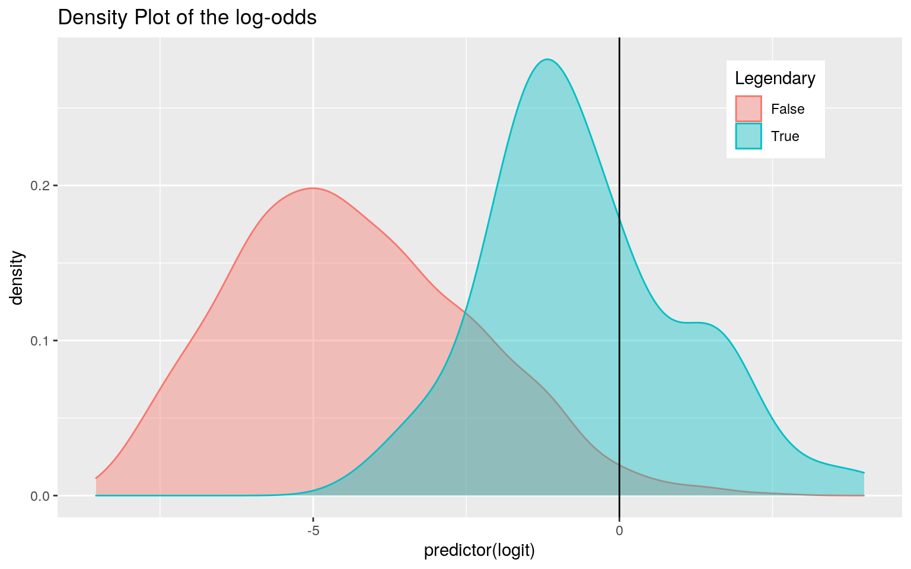
Then I generated an ROC curve and calculated the AUC from that.
library(plotROC)
ROCplot1<-ggplot(poke)+geom_roc(aes(d=Legendary,m=SpAtk+SpDef),n.cuts = 0)+geom_segment(aes(x=0,xend=1,y=0,yend=1),lty=2) + ggtitle("ROC Plot for Legendary Status predicted from Special Attack and Special Defense Stats")
ROCplot1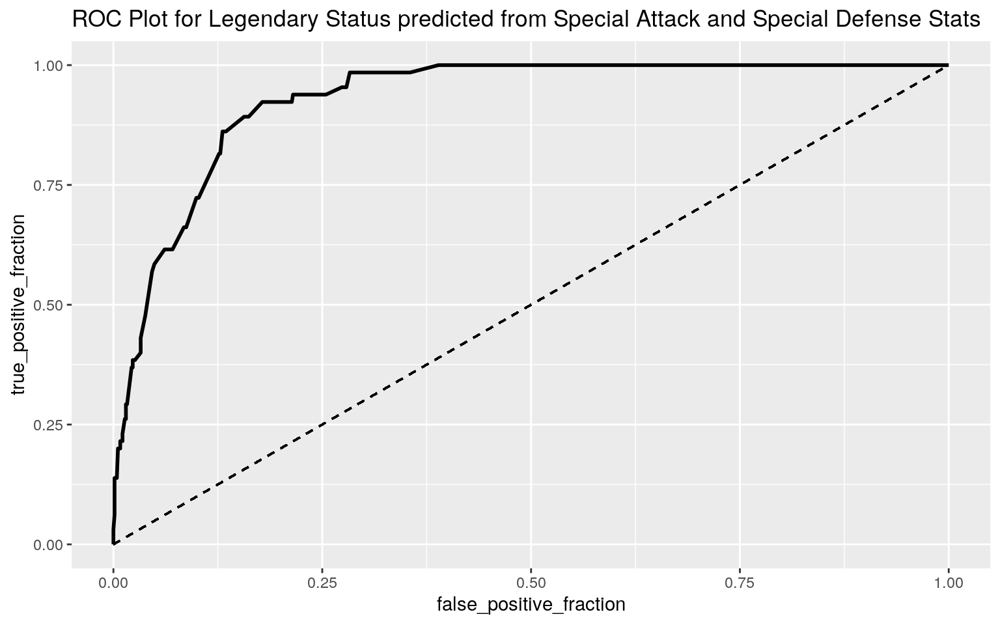
calc_auc(ROCplot1)## PANEL group AUC
## 1 1 -1 0.9299529The AUC for the ROC plot is 0.93. This means that 93% of the time, Legendary Pokemon will have higher Special Attack and Special Defense stats than non-Legendary Pokemon.
Finally, I performed a logistic regression predicting Legendary Pokemon status from all of the other variables (HP, Attack, Defense, Special Attack, Special Defense, Speed, and Generation). First, I needed a dataset that didn’t have the Name column, so I created a new dataset called “pokeclean.”
pokeclean <- pokemon%>%select(HP, Attack, Defense, "SpAtk"="Sp..Atk","SpDef"="Sp..Def",Speed, Generation, Legendary)
fit_log_all <- glm(Legendary~.,data = pokeclean,family = "binomial")
prob_log_all <- predict(fit_log_all,type = "response")
class_diag(prob_log_all,pokeclean$Legendary)## acc sens spec ppv auc
## 1 0.9475 0.5846154 0.9795918 0.7169811 0.9785557The accuracy of the model is 0.948 which is good. The sensitivity, which is the true positive rate, or the probability of a Pokemon being Legendary if they really are when predicted from all the other variables is 0.584. The specificity, which is the true negative rate, or the probability of a Pokemon being labeled as Legendary when they aren’t when predicted from all the other variables is 0.980. The Precision, which is the PPV, or the proportion of Pokemon classified as Legendary that actually are from all the other variables is 0.717. The AUC is 0.979 which means that the probability of a randomly selected Legendary Pokemon has a higher set of stats than a randomly selected non-Legendary Pokemon. Next, performed a 10-fold CV with the same model and reported average out-of-sample classification diagnostics.
library(randomForest)
fit_rf=randomForest(Legendary~.,data=pokeclean)
class_diag(fit_rf$votes[,2],pokeclean$Legendary)## acc sens spec ppv auc
## 1 0.95 0.4769231 0.9918367 0.8378378 0.9745055set.seed(1234)
k=10
data_all<-pokeclean[sample(nrow(pokeclean)),]
folds_all<-cut(seq(1:nrow(pokeclean)),breaks=k,labels=F)
diags_all<-NULL
for(i in 1:k){
train_all<-data_all[folds_all!=i,]
test_all<-data_all[folds_all==i,]
truth_all<-test_all$Legendary
fit_all<-glm(Legendary~.,data=train_all,family = "binomial")
probs_all<-predict(fit_all,newdata = test_all,type="response")
diags_all<-rbind(diags_all,class_diag(probs_all,truth_all))
}
diags_all%>%summarize_all(mean)## acc sens spec ppv auc
## 1 0.93875 0.5236111 0.9770238 NaN 0.9756342The accuracy of the model is 0.944 which is good. The sensitivity, which is the true positive rate, or the probability of a Pokemon being Legendary if they really are when predicted from all the other variables is 0.490. The specificity, which is the true negative rate, or the probability of a Pokemon being labeled as Legendary when they aren’t when predicted from all the other variables is 0.985. The Precision, which is the PPV, or the proportion of Pokemon classified as Legendary that actually are from all the other variables was returned as not a number. The AUC is 0.975 which means that the probability of a randomly selected Legendary Pokemon has a higher set of stats than a randomly selected non-Legendary Pokemon. Next I performed LASSO on the same model.
library(glmnet)
y<-as.matrix(pokeclean$Legendary)
x<-model.matrix(Legendary~.,data = pokeclean)[,-1]
head(x)## HP Attack Defense SpAtk SpDef Speed Generation
## 1 45 49 49 65 65 45 1
## 2 60 62 63 80 80 60 1
## 3 80 82 83 100 100 80 1
## 4 80 100 123 122 120 80 1
## 5 39 52 43 60 50 65 1
## 6 58 64 58 80 65 80 1cv<-cv.glmnet(x,y,family="binomial")
{plot(cv$glmnet.fit, "lambda", label=TRUE)
abline(v = log(cv$lambda.1se))
abline(v = log(cv$lambda.min),lty=2)}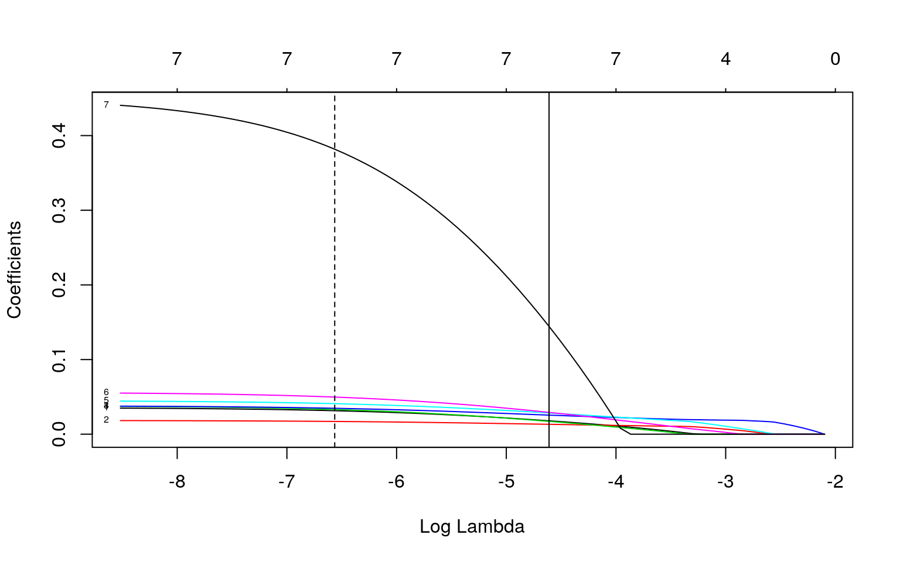
lasso <-glmnet(x,y,family = "binomial",lambda = cv$lambda.1se)
coef(lasso)## 8 x 1 sparse Matrix of class "dgCMatrix"
## s0
## (Intercept) -14.49032466
## HP 0.01795838
## Attack 0.01323064
## Defense 0.01723531
## SpAtk 0.02557658
## SpDef 0.02846868
## Speed 0.02923883
## Generation 0.14447991Looking at the LASSO results, all of the variables used are highly predictive variables. Then I performed a 10-fold CV with the variables that LASSO selected.
set.seed(1234)
k=10
data_lasso <-pokeclean%>%sample_frac
folds_lasso <-ntile(1:nrow(data_lasso),n=10)
diags_lasso <-NULL
for(i in 1:k){
train_lasso <-data_lasso[folds_lasso!=i,]
test_lasso <-data_lasso[folds_lasso==i,]
truth_lasso <-test_lasso$Legendary
fit_lasso <- glm(Legendary~.,
data=train_lasso,family = "binomial")
probs_lasso <-predict(fit_lasso,newdata=test_lasso,type="response")
diags_lasso <-rbind(diags_lasso,class_diag(probs_lasso,truth_lasso))
}
diags_lasso%>%summarize_all(mean)## acc sens spec ppv auc
## 1 0.93875 0.5236111 0.9770238 NaN 0.9756342The accuracy of the model is 0.938 which is good, but less than accuracy of the logistic regression. The sensitivity, which is the true positive rate, or the probability of a Pokemon being Legendary if they really are when predicted from all the other variables is 0.524. The specificity, which is the true negative rate, or the probability of a Pokemon being labeled as Legendary when they aren’t when predicted from all the other variables is 0.977. The Precision, which is the PPV, or the proportion of Pokemon classified as Legendary that actually are from all the other variables was returned as not a number. The AUC is 0.976 which means that the probability of a randomly selected Legendary Pokemon has a higher set of stats than a randomly selected non-Legendary Pokemon. This is just slightly less than the AUC of the original logistic regression and virtually equal to the AUC from the 10-fold CV without LASSO, which makes sense since the LASSO results said that all of the variables used are highly predictive variables.